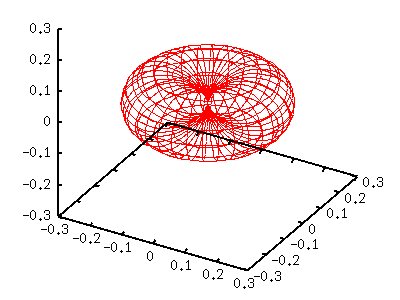
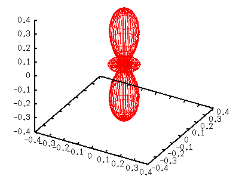
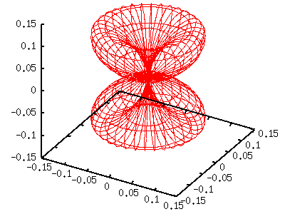
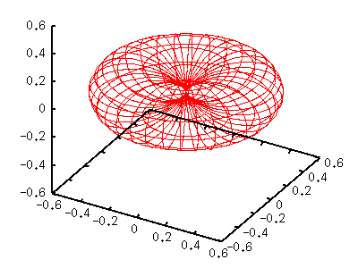

- not so Frequently Asked Questions -
update 2004/11/29
|
|
- not so Frequently Asked Questions - update 2004/11/29
|
Various Angular Momenta and Magnetic Quantum Numbersl=1,m=-1,+1In the quantum mechanics, l and m values of the spherical harmonics Y[lm] are the angular momentum and magnetic momentum numbers. Here we show several spherical harmonics which have relatively small l values. The method is the same as the previous section --- express x,y,z by parameters u and v. When m is odd, the spherical harmonics contains an imaginary part which comes from exp(-im phi) term. For m=-1 and 1, the function becomes as follows: Y[1,-1](t,p) = sqrt(3/8pi) sin(t) exp(-i p) Y[1, 1](t,p) = -sqrt(3/8pi) sin(t) exp( i p) |Y|^2 can be calculated easily by multiplying Y and its complex conjugate, and both above become the same function, Y(t)=3/8 pi sin^2(t). The complex conjugate function of the spherical harmonics can be given by the relation, (Y[l,m])^* = (-1)^m Y[l,-m].
gnuplot> set parametric
dummy variable is t for curves, u/v for surfaces
gnuplot> set angle degree
gnuplot> set urange [0:360]
gnuplot> set vrange [-90:90]
gnuplot> set isosample 36,18
gnuplot> set ticslevel 0
gnuplot> set size 0.65,1.0
gnuplot> a=3.0/(8*pi)
gnuplot> fx(u,v)=cos(u)*cos(v)
gnuplot> fy(u,v)=sin(u)*cos(v)
gnuplot> fz(v)=sin(v)
gnuplot> g(v)=cos(v)*cos(v)
gnuplot> splot a*g(v)*fx(u,v),a*g(v)*fy(u,v),a*g(v)*fz(v)

The left torus-shape figure is |Y[11]|^2. Since this function contains sin(t)=cos(v), we defined g(v)=cos(v)*cos(v) . l=2,m=-2,-1,0,+1,+2When l=2, there are 5 different functions those correspond to m=-2 to 2. Y[2,-2](t,p) = sqrt(15/32pi) sin(t)sin(t) exp(-2i p) Y[2,-1](t,p) = sqrt(15/8pi) sin(t)cos(t) exp(-i p) Y[2, 0](t,p) = sqrt(5/16pi) (3cos(t)cos(t)-1) Y[2, 1](t,p) = -sqrt(15/8pi) sin(t)cos(t) exp( i p) Y[2, 2](t,p) = sqrt(15/32pi) sin(t)sin(t) exp( 2i p) Here we show the case of m=0,1,2. A function of negative m value is the same as that for |m|. m=0 gnuplot> a= 5.0/(16*pi) gnuplot> g(v)= (3*sin(v)*sin(v)-1)**2 gnuplot> splot a*g(v)*fx(u,v),a*g(v)*fy(u,v),a*g(v)*fz(v) 
m=1 gnuplot> a=15.0/( 8*pi) gnuplot> g(v)= (sin(v)*cos(v))**2 gnuplot> splot a*g(v)*fx(u,v),a*g(v)*fy(u,v),a*g(v)*fz(v) 
m=2 gnuplot> a=15.0/(32*pi) gnuplot> g(v)= (cos(v)*cos(v))**2 gnuplot> splot a*g(v)*fx(u,v),a*g(v)*fy(u,v),a*g(v)*fz(v) 
 |